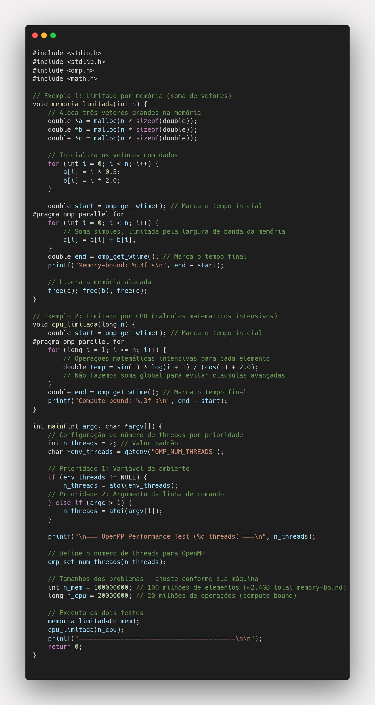

Tarefa 4 – Programação Paralela com OpenMP
Este projeto apresenta dois exemplos de paralelização em C usando OpenMP:
- Um programa limitado por memória (memory-bound), que realiza somas simples em vetores.
- Um programa limitado por CPU (compute-bound), que executa cálculos matemáticos intensivos.
Código Implementado
Função memoria_limitada (Memory-bound)
Soma dois vetores grandes com 100 milhões de elementos, limitada pela largura de banda da memória.
#pragma omp parallel for
for (int i = 0; i < n; i++) {
// Soma simples, limitada pela largura de banda da memória
c[i] = a[i] + b[i];
}
Função cpu_limitada (Compute-bound)
Executa 20 milhões de operações matemáticas intensivas, limitada pela capacidade de processamento.
#pragma omp parallel for
for (long i = 1; i <= n; i++) {
// Operações matemáticas intensivas para cada elemento
double temp = sin(i) * log(i + 1) / (cos(i) + 2.0);
}
Configuração: O número de threads pode ser definido via argumento de linha de comando ou variável de ambiente. O programa mede e exibe os tempos de execução de forma minimalista.
Análise de Desempenho
Gargalo de von Neumann e Tipos de Programas
O "gargalo de von Neumann" refere-se à limitação arquitetural onde o desempenho do sistema é restringido pela velocidade de transferência de dados entre a memória e a CPU. Esta limitação foi identificada por John von Neumann e representa um dos principais desafios da computação moderna.
Características dos Diferentes Tipos de Programas:
Programas Memory-bound (Limitados por Memória)
- Definição: Programas cujo desempenho é limitado pela largura de banda da memória
- Características: Muitas operações de leitura/escrita, operações aritméticas simples
- Exemplo prático: Soma de vetores - requer carregar dois arrays da memória, somar e armazenar o resultado
- Gargalo: Tempo gasto esperando dados da memória é maior que o tempo de processamento
- Padrão típico: Baixa razão flops/byte (poucas operações por byte transferido)
Programas Compute-bound (Limitados por CPU)
- Definição: Programas cujo desempenho é limitado pela capacidade de processamento da CPU
- Características: Muitos cálculos por dado carregado, operações matemáticas complexas
- Exemplo prático: Cálculos trigonométricos - poucas transferências de memória, muitas operações por iteração
- Gargalo: Unidades de execução (ALU, FPU) são o fator limitante
- Padrão típico: Alta razão flops/byte (muitas operações por byte transferido)
Identificando o Tipo do Programa:
Teste prático: Se aumentar a frequência da CPU melhora significativamente o desempenho, provavelmente é compute-bound. Se aumentar a largura de banda da memória tem maior impacto, é memory-bound.
Multithreading de Hardware: Quando Ajuda e Quando Atrapalha
O multithreading de hardware (como Hyper-Threading) permite que núcleos executem múltiplos threads alternadamente:
Memory-bound: AJUDA ✅
O multithreading de hardware é especialmente benéfico para programas memory-bound pelas seguintes razões técnicas:
1. Mascaramento de Latência de Memória:
- Cache Miss Timing: Um cache miss na RAM pode levar 100-300 ciclos de CPU. Durante esse tempo, o núcleo ficaria completamente ocioso em single-threading
- Thread Switching: Quando Thread A sofre cache miss, o hardware automaticamente alterna para Thread B, que pode executar instruções úteis durante a espera
- Aproveitamento de Ciclos: Em vez de desperdiçar centenas de ciclos esperando, o processador mantém utilização próxima a 100%
2. Melhor Utilização da Largura de Banda:
- Múltiplas Requisições: Diferentes threads podem fazer requisições simultâneas para diferentes bancos de memória
- Pipeline de Memória: Enquanto Thread A recebe dados, Thread B já pode estar solicitando os próximos
- Saturação dos Canais: Sistemas multi-channel se beneficiam de requisições paralelas de threads diferentes
3. Eficiência do Pipeline de CPU:
- Stall Prevention: Evita que o pipeline da CPU seja completamente limpo durante stalls de memória
- Instruction Level Parallelism: Threads diferentes têm padrões de dependência distintos, permitindo melhor paralelismo de instruções
- Branch Prediction: Threads alternados reduzem a pressão sobre o preditor de saltos
4. Exemplo Prático de Memory-bound:
Cenário: Soma de vetores grandes (nosso exemplo)
Single-thread: Carrega A[i] → espera 200 ciclos → carrega B[i] → espera 200 ciclos → soma → armazena C[i]
Multi-thread: Thread 1 carrega A[i] → Thread 2 executa durante espera → Thread 1 retorna → processo continua sem interrupção
Resultado: Latência total reduzida de ~400 ciclos para ~50 ciclos efetivos
Compute-bound: ATRAPALHA ❌
O multithreading de hardware pode prejudicar programas compute-bound por várias razões técnicas:
1. Competição por Recursos Limitados:
- Unidades de Execução: Cada núcleo tem um número limitado de ALUs (Arithmetic Logic Units) e FPUs (Floating Point Units). Com 2 threads por núcleo, cada thread tem acesso a apenas ~50% desses recursos
- Pipeline de Instruções: O pipeline do processador deve alternar entre threads, criando bolhas (vazios) que reduzem a eficiência
- Registradores: O pool de registradores físicos é dividido entre os threads, limitando a capacidade de otimização do compilador
2. Contenção de Cache:
- Cache L1: Compartilhado entre threads do mesmo núcleo, causando mais misses
- TLB (Translation Lookaside Buffer): Competição pelo cache de tradução de endereços
- Branch Predictor: Preditor de saltos confuso por padrões de múltiplos threads
3. Overhead de Context Switching:
- Mudanças de contexto: CPU gasta ciclos alternando entre threads
- Invalidação de caches: Dados de um thread podem "expulsar" dados úteis do outro
- Perda de localidade: Threads diferentes acessam regiões de memória distintas
Exemplo prático: Um núcleo com 4 FPUs executando 1 thread pode processar 4 operações matemáticas por ciclo. Com 2 threads (hyperthreading), cada thread compete pelos mesmos recursos, resultando em ~2.5 operações por ciclo no total (não 8), com overhead adicional.
Resultados Experimentais
Os testes foram executados em uma máquina com processador multi-core, variando o número de threads para observar o comportamento dos algoritmos:
Observações dos Resultados:
- Ambos os algoritmos se beneficiaram da paralelização até 4 threads
- Compute-bound teve maior speedup (3.27x vs 2.12x), indicando melhor escalabilidade
- Memory-bound mostrou saturação mais cedo, provavelmente devido à limitação da largura de banda de memória
- Eficiência decrescente: O speedup não é linear devido a overheads e limitações de hardware
Conclusão
O multithreading de hardware é uma ferramenta poderosa, mas seu benefício depende fortemente do tipo de carga de trabalho:
Os resultados experimentais confirmam a teoria: programas compute-bound escalam melhor (3.27x speedup) que memory-bound (2.12x speedup) devido às diferentes limitações de hardware. Esta compreensão é fundamental para otimizar aplicações paralelas.
